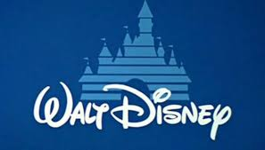
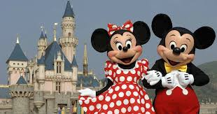

 En agosto de 2014, Disney adquirió una participación minoritaria en BAMTech (un spin-off del negocio de tecnología de transmisión de MLB Advanced Media) por 1.000 millones de dólares, con la opción de adquirir una participación mayoritaria en el futuro. Luego de la compra, ESPN anunció planes para un proyecto exploratorio over-the-top basado en su tecnología (ESPN+) para suplantar sus servicios de televisión lineal existentes. El 8 de agosto de 2016, Disney invocó su opción de adquirir una participación de control en BAMTech por $1.58 mil millones, aumentando su participación a 75%. Junto con la adquisición, la compañía también anunció planes para un segundo, el servicio directo al consumidor de la marca Disney a partir de su contenido de entretenimiento, que se lanzaría después de que la compañía finalice su acuerdo de distribución existente con Netflix en 2018. En diciembre de 2016, Disney anunció su intención de adquirir activos de entretenimiento clave de 21st Century Fox, en un acuerdo por valor de más de $50 mil millones. La adquisición está destinada a reforzar la cartera de contenido de Disney para sus productos de transmisión.
 El contenido de la plataforma incluye todas las películas, series, y programas producidos o distribuidos por The Walt Disney Company y todas sus filiales: (20th Century Studios, Pixar Animation Studios, Marvel Studios, National Geographic, LucasFilm, Blue Sky Studios, Searchlight Pictures, The Muppets, Walt Disney Television, Disney Channels Worldwide, Disneynature). El servicio se construye alrededor de las principales marcas de entretenimiento de Disney, incluyendo Walt Disney Studios, Walt Disney Animation Studios, Pixar, Marvel Studios, Lucasfilm y Disneynature y, provisionalmente, las nuevas unidades adquiridas por la compañía 21st Century Fox (aunque solo está The Simpsons) como: 20th Century Studios y Blue Sky Studios. Bob Iger el anterior CEO de Disney reveló que la estrategia del estudio es usar a Disney como una plataforma orientada a un público familiar (y que no llevará ninguna película o serie para adultos) mientras que se pretende utilizar la plataforma Hulu para completar la biblioteca de contenido no apto para todo público. Parte de la razón fue porque Disney adquirió control de un 60% del streaming tras la compra de 20th Century Fox que luego de concretarse a principios de 2019 incluiría una cantidad considerable de series de cadenas propietarias de Disney pero no apropiadas como Disney+ tales como FX.